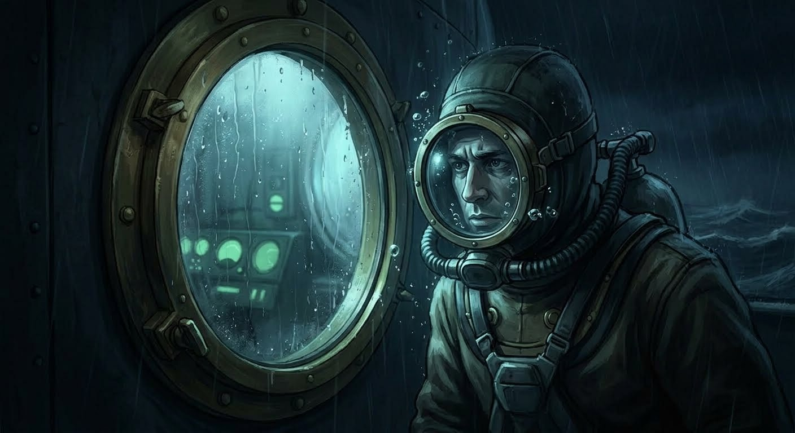

אתם מחייגים אל משמר החופים ושומעים הודעה מוקלטת חוזרת על עצמה שבה המוקדן אומר שהמקום נטוש 20 שנה.
לפתע אתם שומעים נקישה על החלון.
אתם מסתכלים מהחלון ומגלים שם אדם רטוב לחלוטין, לבוש בחליפת צלילה ישנה משנות ה-80.
כשאתם פותחים לו, הוא טוען שהוא המוקדן האמיתי של משמר החופים, ושהקול שדיברתם איתו בטלפון הוא בכלל לא אנושי,
אלא ישות מהמעמקים שמנסה למנוע מכם לחלץ את הלכודים.
